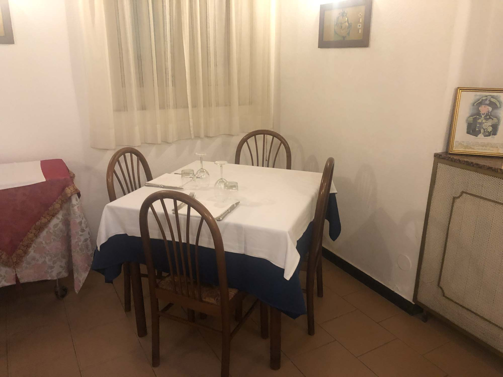
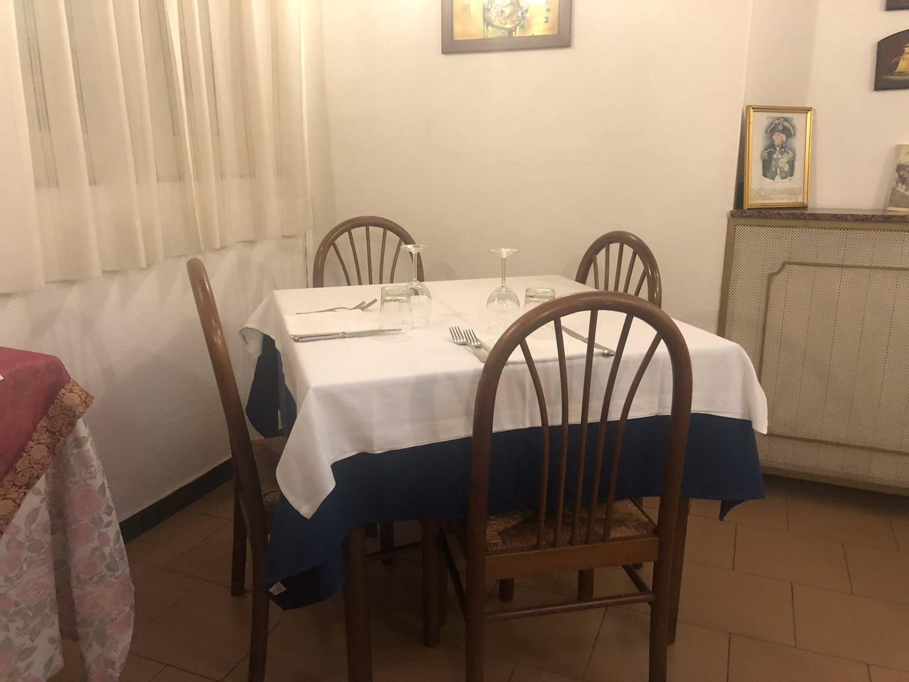
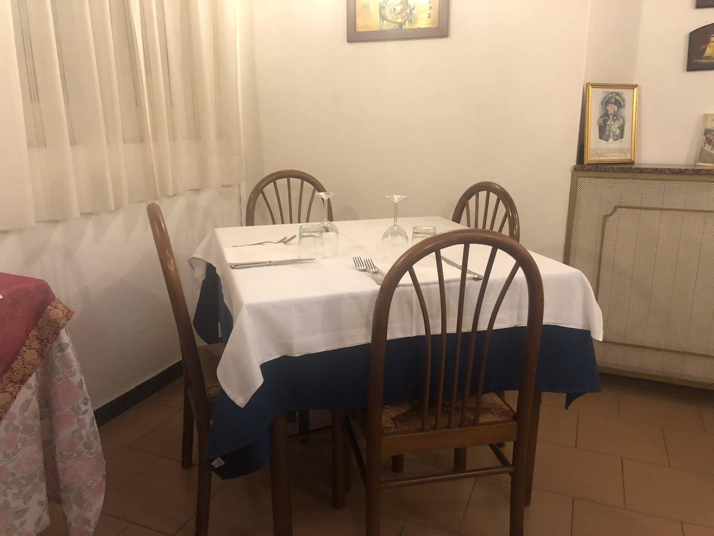

La nostra storia
La sua tradizione comincia infatti alla fine del ‘700, ben 73 anni prima della nascita della versione più moderna del pesto genovese (1863), versione che ha introdotto il basilico come ingrediente principale, come documentato dal gastronomo Giovanni Battista Ratto nel suo libro “La cuciniera Genovese”.
Sito nel cuore del centro storico genovese, il ristorante si affaccia su Piazza delle Erbe, tradizionale centro nevralgico di Genova che un tempo ospitava un importante mercato ortofrutticolo, dai cui prende il nome.
Ora punto di ritrovo per la vita serale, la piazza è perfetta per gustare prodotti culinari tipici e fare esperienza di un un tradizionale contesto genovese, potendo pasteggiare all’ombra degli storici palazzi che la delimitano. Lo spiazzo presenta infatti la tipica forma allungata caratteristica del centro storico di Genova, derivata dalla tradizione edile Ligure che predilige la costruzione di palazzi alti e stretti distanziati di poco tra di loro, in modo da sfruttare il più possibile il ridotto spazio edificabile dove si trova la città, confinata tra il mare e gli appennini.
La leggendaria Sala Nelson
Una delle sale del ristorante da Birbone è intitolata “Sala Nelson”, in onore del celebre ammiraglio ed eroe nazionale dell’Impero Britannico Horatio Nelson, acclamato per i suoi grandi successi in tre storiche battaglie navali. La tradizione vuole che l’ammiraglio abbia scelto proprio il ristorante da Birbone a Genova per incontrarsi con Lady Hamilton, celebre avventuriera inglese e amante di Nelson.
 
